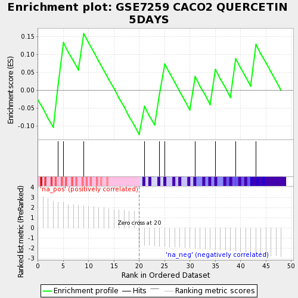
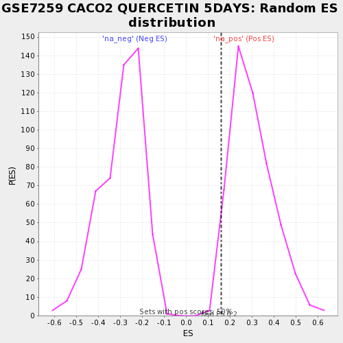

| | | Dataset | testA |
| Phenotype | NoPhenotypeAvailable |
| Upregulated in class | na_pos |
| GeneSet | GSE7259 CACO2 QUERCETIN 5DAYS |
| Enrichment Score (ES) | 0.1587276 |
| Normalized Enrichment Score (NES) | 0.5252489 |
| Nominal p-value | 0.9719439 |
| FDR q-value | 0.9776614 |
| FWER p-Value | 1.0 |
Table: GSEA Results Summary

Fig 1: Enrichment plot: GSE7259 CACO2 QUERCETIN 5DAYS
Profile of the Running ES Score & Positions of GeneSet Members on the Rank Ordered List

Fig 2: GSE7259 CACO2 QUERCETIN 5DAYS: Random ES distribution
Gene set null distribution of ES for GSE7259 CACO2 QUERCETIN 5DAYS